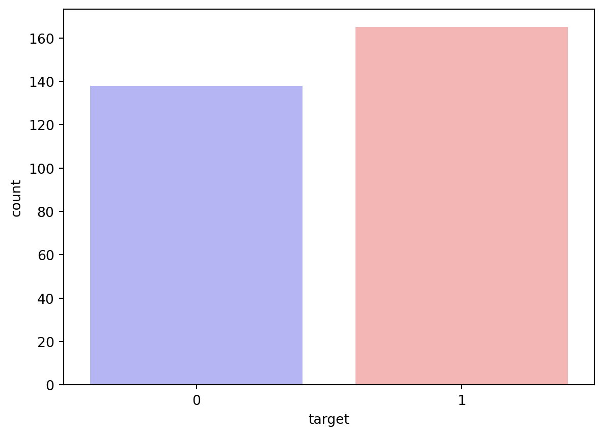
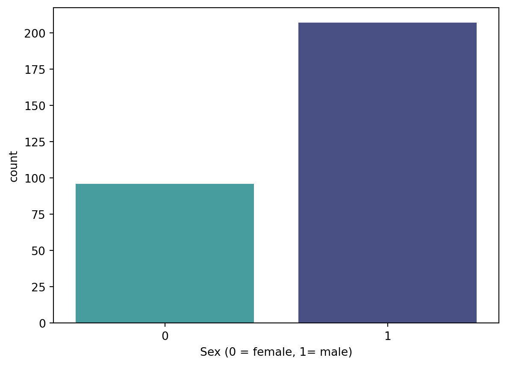
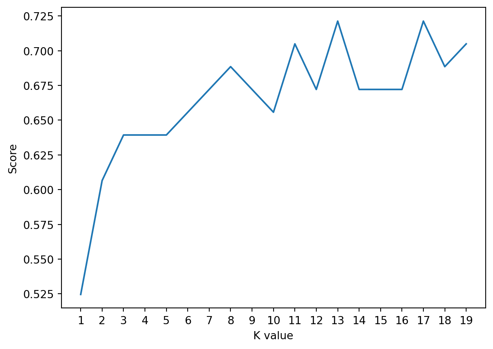

import numpy as np
import pandas as pd
import matplotlib.pyplot as plt
import seaborn as sns
from sklearn.linear_model import LogisticRegression
from sklearn.model_selection import train_test_split
import osHeart Disease Classification and Prediction using KNN Model
In this blog post, our focus will be on delving into a machine-learning project that revolves around predicting heart disease through KNN classification. The journey begins with a comprehensive understanding of the dataset, followed by visualizing key features and normalizing the data. The dataset encompasses information such as gender, age, blood pressure, sugar, and more. Subsequently, we will proceed to train and evaluate a KNN classification model to predict heart disease through machine learning.
Importing Libraries
This segment imports essential libraries for data manipulation, visualization, and machine learning.
Exploring Dataset and Visualization
In this segment, the dataset is explored first. Then it is examined through the calculation and display of the count and percentage of patients with and without heart disease, as well as the percentage of male and female patients. Additionally, it includes visualizations depicting the count of patients with and without heart disease, along with the count of male and female patients.
df = pd.read_csv("heart_Disease.csv")
df.target.value_counts()target
1 165
0 138
Name: count, dtype: int64sns.countplot(x="target", data=df, palette="bwr")
plt.show()C:\Users\USER\AppData\Local\Temp\ipykernel_5384\2218517508.py:1: FutureWarning:
Passing `palette` without assigning `hue` is deprecated and will be removed in v0.14.0. Assign the `x` variable to `hue` and set `legend=False` for the same effect.
sns.countplot(x="target", data=df, palette="bwr")
countNoDisease = len(df[df.target == 0])
countHaveDisease = len(df[df.target == 1])
print("Percentage of Patients with no Heart Disease: {:.2f}%".format((countNoDisease / (len(df.target))*100)))
print("Percentage of Patients with Heart Disease: {:.2f}%".format((countHaveDisease / (len(df.target))*100)))Percentage of Patients with no Heart Disease: 45.54%
Percentage of Patients with Heart Disease: 54.46%countFemale = len(df[df.sex == 0])
countMale = len(df[df.sex == 1])
print("Percentage of Female Patients: {:.2f}%".format((countFemale / (len(df.sex))*100)))
print("Percentage of Male Patients: {:.2f}%".format((countMale / (len(df.sex))*100)))Percentage of Female Patients: 31.68%
Percentage of Male Patients: 68.32%sns.countplot(x='sex', data=df, palette="mako_r")
plt.xlabel("Sex (0 = female, 1= male)")
plt.show()C:\Users\USER\AppData\Local\Temp\ipykernel_5384\1879341537.py:1: FutureWarning:
Passing `palette` without assigning `hue` is deprecated and will be removed in v0.14.0. Assign the `x` variable to `hue` and set `legend=False` for the same effect.
sns.countplot(x='sex', data=df, palette="mako_r")
Normalization of Data
This segment isolates the target variable from the predictors, normalizes the predictor data, divides the data into training and testing sets, and transposes the matrices to align with the specifications of the KNN model. We will partition our dataset, allocating 80% for training data and reserving 20% for testing purposes.
y = df.target.values
x_data = df.drop(['target'], axis = 1)
x = (x_data - np.min(x_data)) / (np.max(x_data) - np.min(x_data))
x_train, x_test, y_train, y_test = train_test_split(x,y,test_size = 0.2,random_state=0)
x_train = x_train.T
y_train = y_train.T
x_test = x_test.T
y_test = y_test.TIn this portion, the code imports the KNeighborsClassifier from the sklearn library, initializes it with a parameter n_neighbors (k) set to 2, fits the model to the training data, generates predictions on the test data, and subsequently prints the accuracy of the model.
from sklearn.neighbors import KNeighborsClassifier
knn = KNeighborsClassifier(n_neighbors = 2) # n_neighbors means k
knn.fit(x_train.T, y_train.T)
prediction = knn.predict(x_test.T)
print("{} NN Score: {:.2f}%".format(2, knn.score(x_test.T, y_test.T)*100))2 NN Score: 60.66%This segment executes a loop across values of k ranging from 1 to 20. For each iteration, it fits a KNN model, records the accuracy of each model in the “score list”, and subsequently plots the accuracies against the corresponding k values. The code identifies the maximum accuracy, stores it in “accuracies[‘KNN’]”, and prints this maximum accuracy. This process aids in pinpointing the optimal k value that yields the highest accuracy.
accuracies = {}
scoreList = []
for i in range(1,20):
knn2 = KNeighborsClassifier(n_neighbors = i) # n_neighbors means k
knn2.fit(x_train.T, y_train.T)
scoreList.append(knn2.score(x_test.T, y_test.T))
plt.plot(range(1,20), scoreList)
plt.xticks(np.arange(1,20,1))
plt.xlabel("K value")
plt.ylabel("Score")
plt.show()
acc = max(scoreList)*100
accuracies['KNN'] = acc
print("Maximum KNN Score is {:.2f}%".format(acc))
Maximum KNN Score is 72.13%Conclusion
The KNN model classification has been executed with an accuracy of 72.13%.